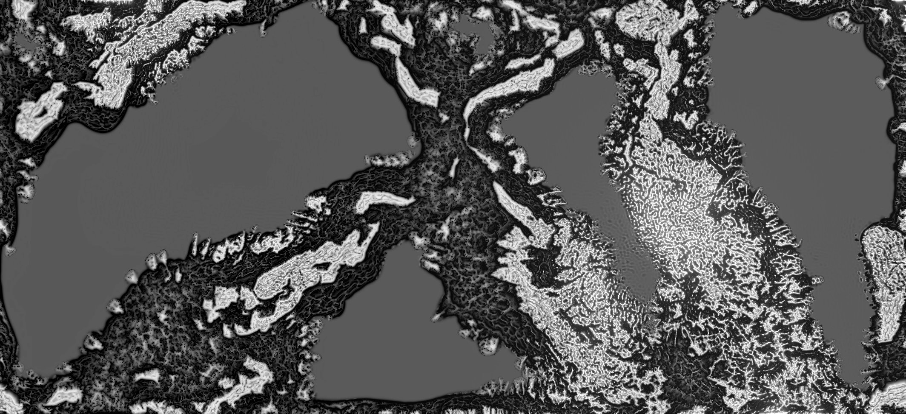
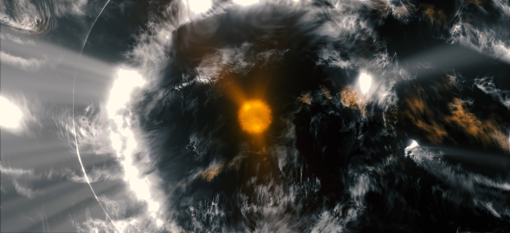
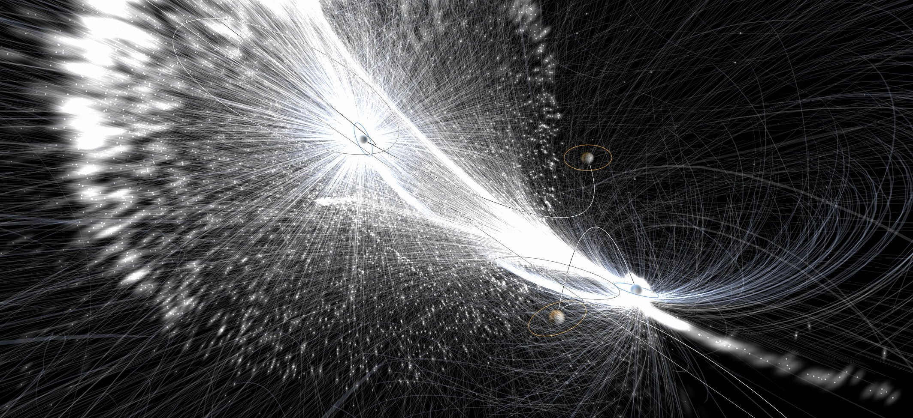

MRSP
Audio-Visual Live Performance
2023~
MRSP is a fully generative audio-visual performance. It invites a way of looking and listening without thinking or a fixed purpose, as an exploration of my own aesthetics. The work moves from reaction diffusion textures, to a familiar unreal sky built from layered noise, and finally to magnetic fields shaped by the interaction between the magnetosphere and the solar wind. These invisible forces are close to daily life and can be felt as gentle shifts in rhythm and attention. Images follow the field’s direction and intensity, while sound moves between near silence and noise.
Dates:
DEC. 20 2025: Tekka - Kuala Lumpur
NOV. 2 2025: Clab Sound Festival - Taipei
DEC. 15 2024: WeSA Festival - Seoul
MAR. 9 2024: VIVIDO : re-Action - Taipei
OCT. 22 2023: Public Visuals Tokyo - Tokyo
JUL. 8 2023: Sensation Remix - Yilan
MRSP is made up of three sections
1 / Micro Reaction
2 / Sedimentary
3 / Polarity
WeSA Festival — Photos by WeSA
VIVIDO : re-Action — Photos by 李林 & 謝艾倫
Clab Sound Festival — Photos by Aquamarine Film
Tekka — Photos by NikoHugh & Robin Wong
Public Visuals Tokyo — Photos by Phont
Sensation Remix — Photos by 汪正祥